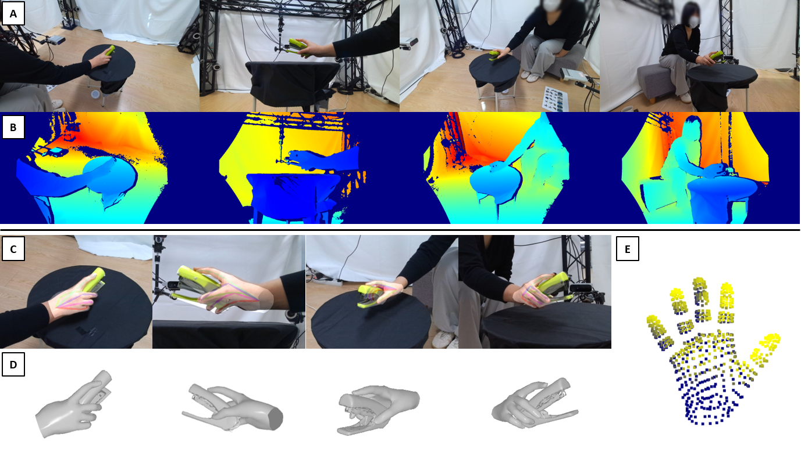
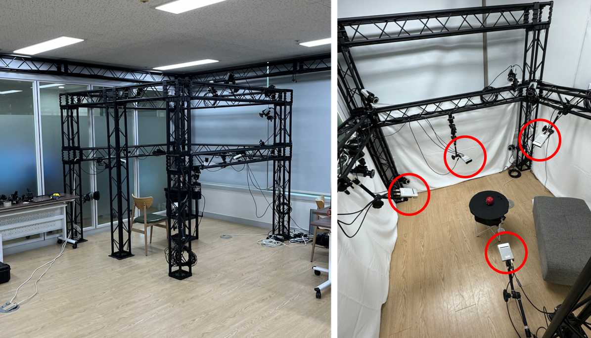
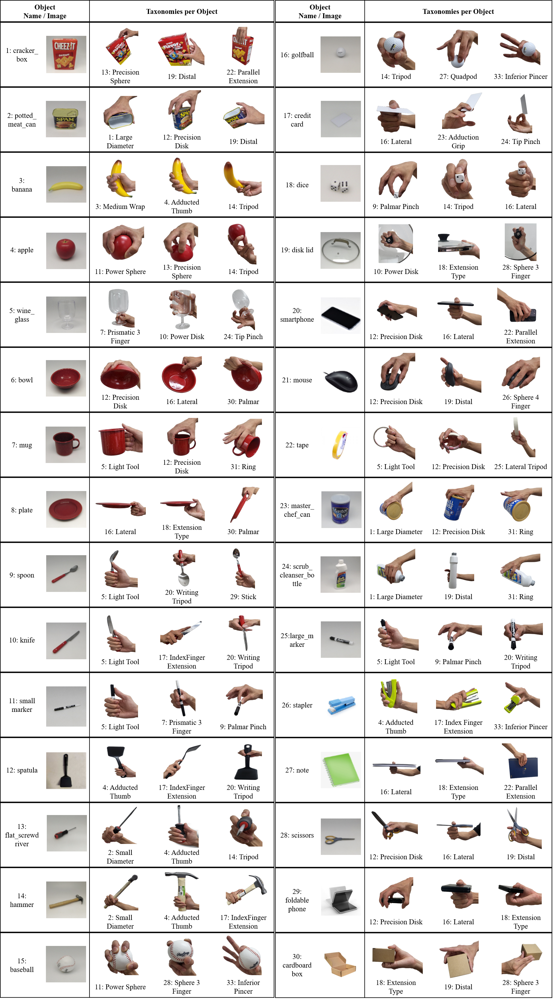

Abstract
Existing datasets for 3D hand-object interaction are limited either in the data cardinality, data variations in interaction scenarios, or the quality of annotations. In this work, we present a comprehensive new training dataset for hand-object interaction called HOGraspNet. It is the only real dataset that captures full grasp taxonomies, providing grasp annotation and wide intraclass variations. Using grasp taxonomies as atomic actions, their space and time combinatorial can represent complex hand activities around objects. We select 22 rigid objects from the YCB dataset and 8 other compound objects using shape and size taxonomies, ensuring coverage of all hand grasp configurations. The dataset includes diverse hand shapes from 99 participants aged 10 to 74, continuous video frames, and a 1.5M RGB-Depth of sparse frames with annotations. It offers labels for 3D hand and object meshes, 3D keypoints, contact maps, and grasp labels. Accurate hand and object 3D meshes are obtained by fitting the hand parametric model (MANO) and the hand implicit function (HALO) to multi-view RGBD frames, with the MoCap system only for objects. Note that HALO fitting does not require any parameter tuning, enabling scalability to the dataset's size with comparable accuracy to MANO. We evaluate HOGraspNet on relevant tasks: grasp classification and 3D hand pose estimation. The result shows performance variations based on grasp type and object class, indicating the potential importance of the interaction space captured by our dataset. The provided data aims at learning universal shape priors or foundation models for 3D hand-object interaction.
Grasp Configurations

BibTeX
@inproceedings{2024graspnet,
title={Dense Hand-Object(HO) GraspNet with Full Grasping Taxonomy and Dynamics},
author={Cho, Woojin and Lee, Jihyun and Yi, Minjae and Kim, Minje and Woo, Taeyun and Kim, Donghwan and Ha, Taewook and Lee, Hyokeun and Ryu, Je-Hwan and Woo, Woontack and Kim, Tae-Kyun},
booktitle={ECCV},
year={2024}
}